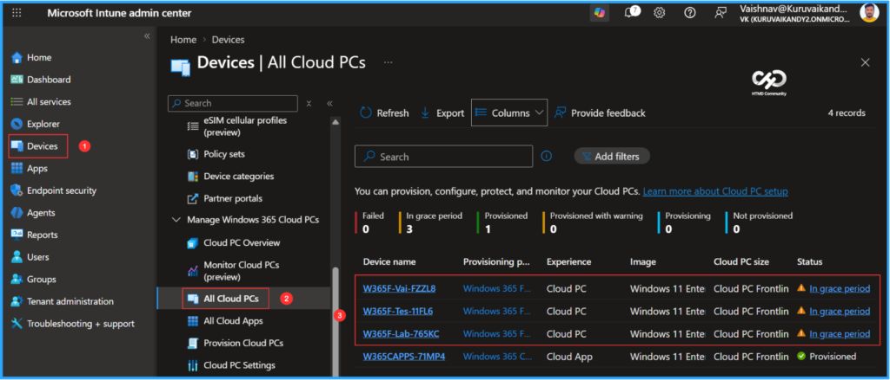
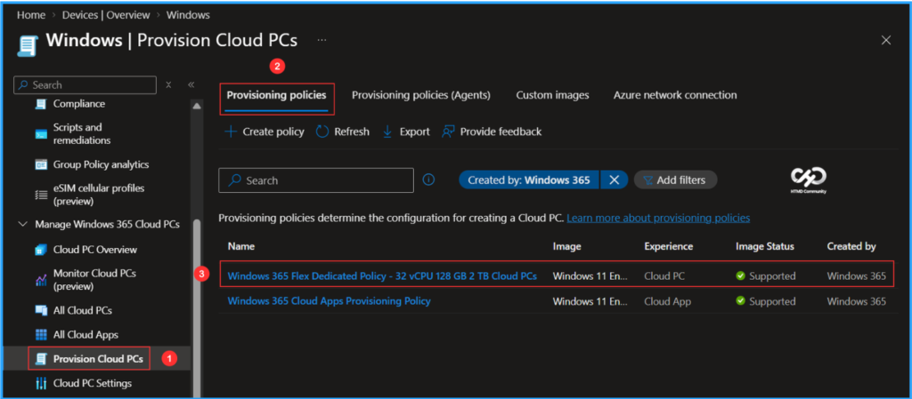
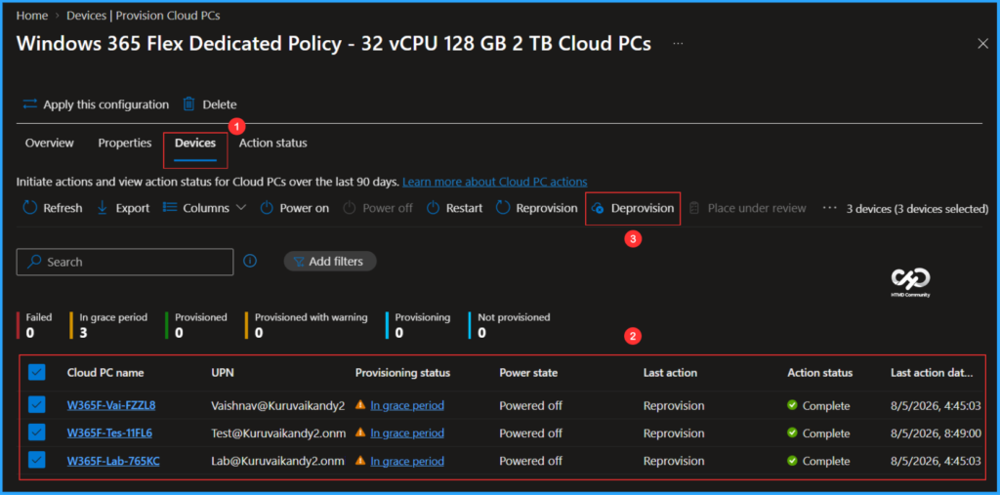
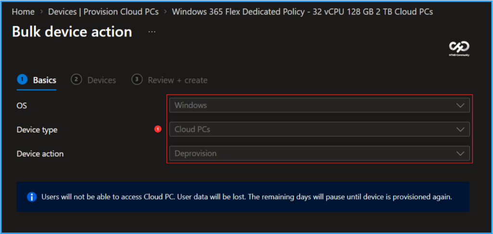
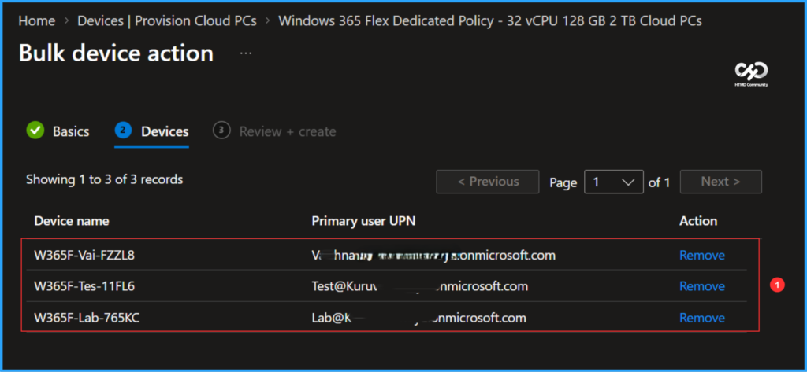
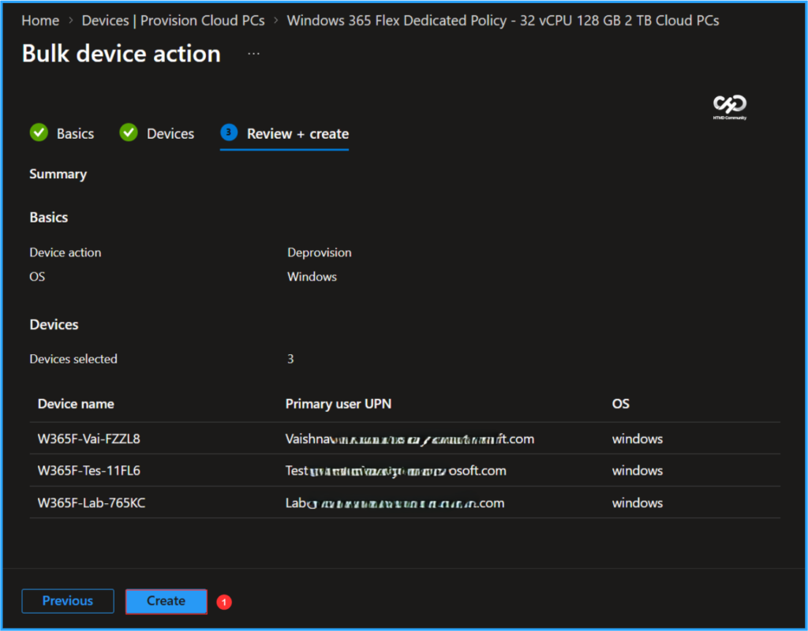
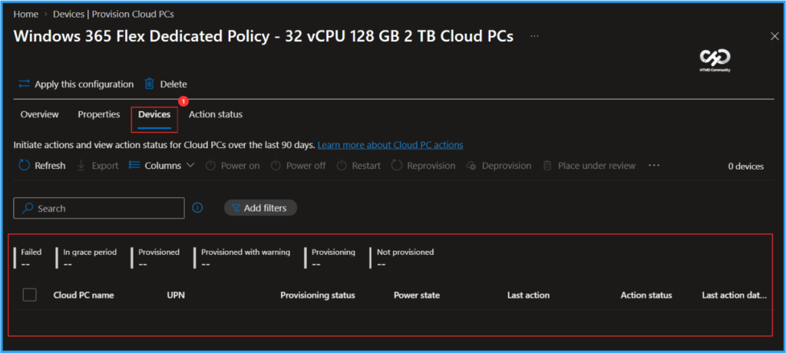

Key Takeaways
- Bulk Deprovisioning: Deprovision multiple Cloud PCs in the grace period at once.
- Save Time: No need to wait for the 7-day grace period or process Cloud PCs individually.
- Simplified Management: Quickly remove Cloud PCs that are no longer required.
- Supported Platforms: Available in Public Preview for Windows 365 Enterprise and Windows 365 Flex Dedicated.
In this article am discusing about Bulk Deprovision for Cloud PCs In Grace Period is Now Available in Microsoft Intune. Bulk deprovisioning for Cloud PCs in the grace period is now available in Public Preview for Windows 365 Enterprise and Windows 365 Flex Dedicated. Administrators can now deprovision multiple Cloud PCs at once instead of waiting for the seven-day grace period to expire or processing each Cloud PC individually. This makes Cloud PC lifecycle management faster and easier, especially when removing Cloud PCs that are no longer required.
Table of Content
How to Perform Bulk Deprovisioning of Windows 365 Cloud PCs In Grace Period
To bulk deprovision Windows 365 Cloud PCs in grace period, first login to the Microsoft Intune Admin Center using your administrator credentials. We currently have three Cloud PCs under the same provisioning policy, all of which are in the grace period. As per Microsoft’s latest update, we are now able to bulk deprovision Cloud PCs without waiting for the seven-day grace period.
- Navigate to > Devices > Manage Windows 365 Cloud PCs > All Cloud PCs

Navigate to Provision Cloud PCs > Provisioning policies > Select Windows 365 Flex Dedicated Policy – 32vCPU 128 GB 2 TB Cloud PCs (In this example)

After opening the policy, you will see the updated navigation options. Click on the Devices tab, select Cloud PCs under the grace period, and then click on the new Deprovision tab. In the Action Status tab, we can initiate actions and view the action status for Cloud PCs over the last 90 days.

Since we selected multiple Cloud PC deprovisions, the options for OS, Device type, and Device action will be greyed out. We will need to click Next on the page. Note that Users will not be able to access Cloud PC. User data will be lost. The remaining days will pause untill device is provisioned again.

In the Devices tab, you will see the selected Device name, the Primary user UPN, and the Action. If you need to remove any Cloud PCs from deprovisioning, do so at this step, then click Next.

In the Review + create pane, confirm your selection, then click Create to start the bulk deprovisioning process for Cloud PCs.

End Result
It’s time to check the status of the bulk reprovisioning. In the Intune Portal, navigate to Devices > Manage Windows 365 Cloud PCs > Provision Cloud PCs. Click on Provisioning policies, and then select the “Windows 365 Flex Dedicated Policy – 32vCPU 128GB 2TB Cloud PCs” (as shown in this example). Next, click on the Devices tab. All Cloud PCs that were initially in the grace period status and added for bulk deprovisioning have been deprovisioned successfully, so we do not see any devices listed here.

Need Further Assistance or Have Technical Questions?
Join the LinkedIn Page and Telegram group to get the latest step-by-step guides and news updates. Join our Meetup Page to participate in User group meetings. Also, join the WhatsApp Community to get the latest news on Microsoft Technologies. We are there on Reddit as well.
Author
Vaishnav K has 13 years of experience in SCCM, Intune, Modern Device Management, and Automation Solutions. He writes and shares knowledge about Microsoft Intune, Windows 365, Azure, Entra, PowerShell Scripting, and Automation. Check out his profile on LinkedIn.